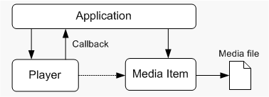

[The feature associated with this page, MFPlay, is a legacy feature. It has been superseded by MediaPlayer and IMFMediaEngine. Those features have been optimized for Windows 10 and Windows 11. Microsoft strongly recommends that new code use MediaPlayer and IMFMediaEngine instead of DirectShow, when possible. Microsoft suggests that existing code that uses the legacy APIs be rewritten to use the new APIs if possible.]
MFPlay is an API for creating media playback applications in C++.
This topic contains the following sections:
MFPlay requires Windows 7.
MFPlay has a simple programming model, while providing the core set of features that most playback applications need. An application creates a player object that controls playback. To play a media file, the player object creates a media item, which can be used to get information about the contents of the media file. The application controls playback through methods on the player object's IMFPMediaPlayer interface. Optionally, the application can get event notifications through a callback interface The following diagram illustrates this process.

To play a media file, call the MFPCreateMediaPlayer function.
// Global variables
IMFPMediaPlayer *g_pPlayer = NULL;
const WCHAR *sURL = L"C:\\Users\\Public\\Videos\\example.wmv";
HRESULT PlayVideo(HWND hwnd, const WCHAR* sURL)
{
// Create the player object and play a video file.
return MFPCreateMediaPlayer(
sURL,
TRUE, // Start playback automatically?
0, // Flags.
NULL, // Callback pointer.
hwnd,
&g_pPlayer
);
}
The MFPCreateMediaPlayer function creates a new instance of the MFPlay player object. The function takes the following parameters:
The last parameter receives a pointer to the player object's IMFPMediaPlayer interface.
Before the application shuts down, be sure to release the IMFPMediaPlayer pointer. You can do this in your WM_CLOSE message handler.
void OnClose(HWND /*hwnd*/)
{
SafeRelease(&g_pPlayer);
SafeRelease(&g_pPlayerCB);
PostQuitMessage(0);
}
[!Note]
This example uses the SafeRelease function to release interface pointers.
Â
For simple video playback, that's all the code you need. The rest of this tutorial will show how to add more features, starting with how to control playback.
The code shown in the previous section will play the media file until it reaches the end of the file. You can stop and start playback by calling the following methods on the IMFPMediaPlayer interface:
The following code pauses or resumes playback when you press the SPACEBAR.
//-------------------------------------------------------------------
// OnKeyDown
//
// Handles the WM_KEYDOWN message.
//-------------------------------------------------------------------
void OnKeyDown(HWND hwnd, UINT vk, BOOL fDown, int cRepeat, UINT flags)
{
HRESULT hr = S_OK;
switch (vk)
{
case VK_SPACE:
// Toggle between playback and paused/stopped.
if (g_pPlayer)
{
MFP_MEDIAPLAYER_STATE state = MFP_MEDIAPLAYER_STATE_EMPTY;
g_pPlayer->GetState(&state);
if (state == MFP_MEDIAPLAYER_STATE_PAUSED ||
state == MFP_MEDIAPLAYER_STATE_STOPPED)
{
g_pPlayer->Play();
}
else if (state == MFP_MEDIAPLAYER_STATE_PLAYING)
{
g_pPlayer->Pause();
}
}
break;
}
}
This example calls the IMFPMediaPlayer::GetState method to get the current playback state (paused, stopped, or playing) and pauses or resumes accordingly.
MFPlay uses a callback interface to send events to your application. There are two reasons for this callback:
To receive callback notifications, implement the IMFPMediaPlayerCallback interface. This interface inherits IUnknown and defines a single method, OnMediaPlayerEvent. To set up the callback, pass a pointer to your IMFPMediaPlayerCallback implementation in the pCallback parameter of the MFPCreateMediaPlayer function.
Here is the first example from this tutorial, modified to include the callback.
// Global variables.
IMFPMediaPlayer *g_pPlayer = NULL;
IMFPMediaPlayerCallback *g_pCallback = NULL;
// Call an application-defined function to create the callback object.
hr = CreateMyCallback(&g_pCallback);
// Create the player object and play a video file.
const WCHAR *sURL = L"C:\\Users\\Public\\Videos\\example.wmv";
if (SUCCEEDED(hr))
{
hr = MFPCreateMediaPlayer(
sURL,
TRUE, // Start playback automatically?
0, // Flags.
g_pCallback, // Callback pointer.
hwnd,
&g_pPlayer
);
}
The OnMediaPlayerEvent method has a single parameter, which is a pointer to the MFP_EVENT_HEADER structure. The eEventType member of this structure tells you which event occurred. For example, when playback starts, MFPlay sends the MFP_EVENT_TYPE_PLAY event.
Each event type has a corresponding data structure that contains information for that event. Each of these structures starts with an MFP_EVENT_HEADER structure. In your callback, cast the MFP_EVENT_HEADER pointer to the event-specific data structure. For example, if the event type is MFP_PLAY_EVENT, the data structure is MFP_PLAY_EVENT. The following code shows how to handle this event in the callback.
void STDMETHODCALLTYPE MediaPlayerCallback::OnMediaPlayerEvent(
MFP_EVENT_HEADER *pEventHeader
)
{
switch (pEventHeader->eEventType)
{
case MFP_EVENT_TYPE_PLAY:
OnPlay(MFP_GET_PLAY_EVENT(pEventHeader));
break;
// Other event types (not shown).
}
}
// Function to handle the event.
void OnPlay(MFP_PLAY_EVENT *pEvent)
{
if (FAILED(pEvent->header.hrEvent))
{
// Error occurred during playback.
}
}
This example uses the MFP_GET_PLAY_EVENT event to cast the pEventHeader pointer to an MFP_PLAY_EVENT structure. The HRESULT from the operation that triggered the event is stored in the hrEvent field of the structure.
For a list of all the event types and the corresponding data structures, see MFP_EVENT_TYPE.
A note about threading: By default, MFPlay invokes the callback from the same thread that called MFPCreateMediaPlayer. This thread must have a message loop. Alternatively, you can pass the MFP_OPTION_FREE_THREADED_CALLBACK flag in the creationOptions parameter of MFPCreateMediaPlayer. This flag causes MFPlay to invoke callbacks from a separate thread. Either option has implications for your application. The default option means your callback cannot do anything that waits on your message loop, such as waiting for a UI action, because that will block your window procedure. The free-threaded option means you need to use critical sections to protect any data that you access in your callback. In most cases, the default option is simplest.
When you open a media file in MFPlay, the player creates an object called a media item that represents the media file. This object exposes the IMFPMediaItem interface, which you can use to get information about the media file. Many of the MFPlay event structures contain a pointer to the current media item. You can also get the current media item by calling IMFPMediaPlayer::GetMediaItem on the player.
Two particularly useful methods are IMFPMediaItem::HasVideo and IMFPMediaItem::HasAudio. These methods query whether the media source contains video or audio.
For example, the following code tests whether the current media file contains a video stream.
IMFPMediaItem *pItem;
BOOL bHasVideo = FALSE;
BOOL bIsSelected = FALSE;
hr = g_pPlayer->GetMediaItem(TRUE, &pItem);
if (SUCCEEDED(hr))
{
hr = pItem->HasVideo(&bHasVideo, &bIsSelected);
pItem->Release();
}
If the source file contains a video stream that is selected for playback, bHasVideo and bIsSelected are both set to TRUE.
When MFPlay plays a video file, it draws the video in the window that you specified in the MFPCreateMediaPlayer function. This occurs on a separate thread owned by the Microsoft Media Foundation playback pipeline. For the most part, your application does not need to manage this process. However, there are two situations where the application must notify MFPlay to update the video.
The IMFPMediaPlayer::UpdateVideo method handles both cases. Call this method inside both the WM_PAINT and WM_SIZE message handlers for the video window.
[!IMPORTANT] Call the GDI BeginPaint function before calling UpdateVideo.
Â
IMFPMediaPlayer *g_pPlayer; // MFPlay player object
void OnSize(HWND hwnd, UINT state, int cx, int cy)
{
HDC hdc;
PAINTSTRUCT ps;
if (g_pPlayer && (state == SIZE_RESTORED))
{
hdc = BeginPaint(hwnd, &ps);
g_pPlayer->UpdateVideo();
EndPaint(hwnd, &ps);
}
}
void OnPaint(HWND hwnd)
{
HDC hdc;
PAINTSTRUCT ps;
hdc = BeginPaint(hwnd, &ps);
if (g_pPlayer)
{
g_pPlayer->UpdateVideo();
}
EndPaint(hwnd, &ps);
}
Unless you specify otherwise, MFPlay shows the video at the correct aspect ratio, using letterboxing if needed. If you do not want to preserve the aspect ratio, call IMFPMediaPlayer::SetAspectRatioMode with the MFVideoARMode_None flag. This will cause MFPlay to stretch the video to fill the entire rectangle, with no letterboxing. Typically you should use the default setting and let MFPlay letterbox the video. The default letterbox color is black, but you can change this by calling IMFPMediaPlayer::SetBorderColor.
The current version of MFPlay has the following limitations:
Using MFPlay for Audio/Video Playback
Â
Â